試01
JLPT対策
JLPT Exam Prep
Level-wise syllabus coverage, mock tests, reading-speed drills and listening practice with a clear week-by-week plan up to exam day.
See the stages →
 夢が叶う
夢が叶う
An online institute built for learners who want more than rote memorisation. Four guided stages take you from your very first kana to N2 fluency — with interactive lessons, exam strategy, and a teacher who answers every question.
From different countries, one goal — to master Japanese and achieve their dreams with YUME GA KANAU.



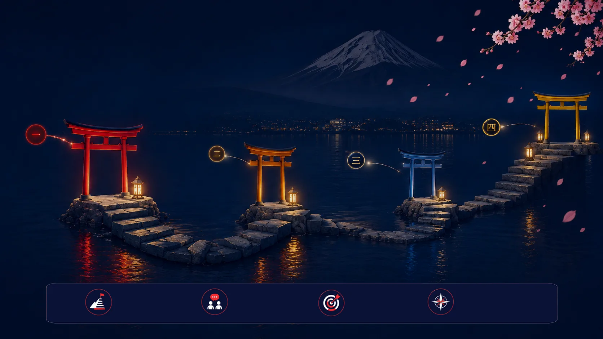
A clear journey from your first “あ” to confident conversations. One step at a time. しっかり、着実に。
Hiragana, katakana, ~100 kanji and the phrases that carry a real self-introduction.
て-form, plain form, ~300 kanji — sentences finally start joining together.
~650 kanji, natural listening, opinions — bridging intermediate fluency.
1000+ kanji, keigo, business register and proven exam strategies.
Every class is built around the way the language is actually used — logic before lists, patterns before drills, and culture woven into both.
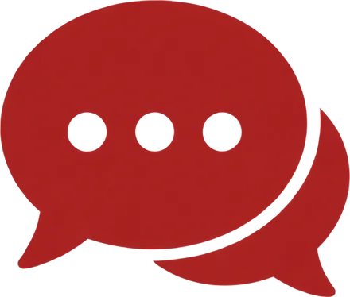
Small batches and 1-on-1 slots mean no question waits until next week.
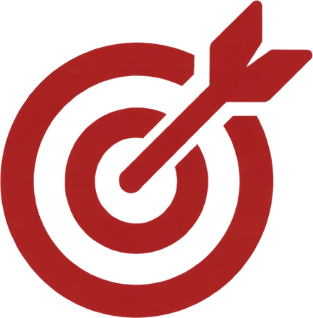
JLPT-specific tactics for reading speed, listening focus and time control.
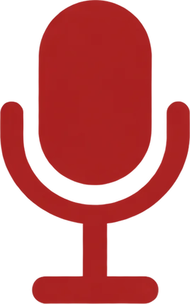
You practise out loud in every session — not only before an exam.
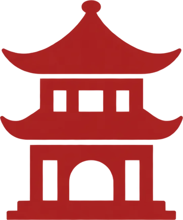
Etiquette, nuance and context, so the language feels lived rather than learned.

More than a teacher — a fellow learner,
cheering for your progress.
 Parveen Kaur Sensei
Parveen Kaur SenseiIn our classes, every mistake is a step forward, every question is welcomed, and every milestone is celebrated. Let’s make your dream of mastering Japanese come true together.
 JLPT Expertise
JLPT ExpertiseSpecialized in N5–N2 teaching & exam strategies
 Experience
Experience5+ years of teaching Japanese learners
 Students Guided
Students Guided1000+ students across the world
 Teaching Philosophy
Teaching PhilosophyPatient, supportive and focused on real progress
Language is more than words —
it’s connection.
I focus on building confidence, clarity
and consistency so you can use Japanese
naturally in real life.
 Loves Japanese literature and culture
Loves Japanese literature and culture Enjoys calligraphy and journaling
Enjoys calligraphy and journaling Explores Japan whenever possible
Explores Japan whenever possibleYour effort today builds the fluency of tomorrow.
Every learner’s path is unique.
Here’s what our students have to say about their journey with us.
You are kind, friendly and patient, and always motivated me to keep improving. Your teaching style makes even the difficult topics easy to understand.
Read full review New Delhi, India
JLPT N5
New Delhi, India
JLPT N5
I used to just memorise grammar patterns without really getting them — you’ve taught me in a way that actually sticks. I’d recommend you to anyone trying to clear N2.
Read full review New Delhi · Japan
JLPT N2
New Delhi · Japan
JLPT N2
I especially loved the way you explained the stories and the logic behind each kanji — it made learning so much more interesting and easier to remember.
Read full reviewNew Delhi, India
JLPT N4
You explain every lesson clearly and make learning enjoyable. Whenever we have questions you help us with a smile and make sure everyone understands the topic.
Read full reviewJapan
JLPT N5
Her teaching is clear, patient and engaging, and she puts a lot of effort into making sure every student understands the lesson. My Japanese has improved significantly.
Read full review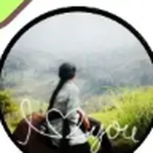
Tamil Nadu, India
JLPT N3
You are one of the kindest, most humble and patient teachers I have ever met, and your teaching style makes even difficult things feel simple. 私の大好きな先生
Read full review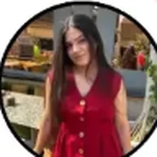
New Delhi, India
JLPT N4
I was weak even in N4, but you took me through a revision that made my base far firmer before N3. Your daily revision tests keep new kanji and vocab impossible to forget.
Read full review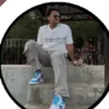
Kolkata, India
JLPT N3
Here are some of the most common questions students ask. Still unsure? Feel free to reach out — we’re always happy to help!
What happens in a trial class?In a free trial class, we assess your current Japanese level, introduce our interactive teaching methodology, and conduct a short live lesson. It’s a great opportunity to experience the learning atmosphere, discuss your language goals, and ask Parveen Sensei any questions before enrolling.
How are classes scheduled across time zones?We currently accommodate learners across multiple time zones, including India, the UK, and Japan. While scheduling depends on slot availability, we always do our best to manage and align batch timings based on student requirements wherever possible.
What if I miss a class?No separate purchases are required! We provide all essential study materials, including PDF handouts, custom Kanji workbooks, vocabulary lists, and practice tests, directly through your official batch WhatsApp group.
We strive to deliver complete satisfaction. Fee payments are non-refundable once a course batch begins, but if you face unforeseen circumstances, you may request to pause your enrollment or transfer to a future batch.
Can I switch from group to 1-on-1 later?Yes, but with a few conditions. Since 1-on-1 coaching requires dedicated timing slots, switching depends on slot availability. Furthermore, if you are currently enrolled in a group batch for a specific level, you must complete that level with your group—you can only transition to 1-on-1 coaching when you start your next level. Please note that fee structures for 1-on-1 personalized classes differ from group batches.
We’re happy to help! Reach out to us anytime.
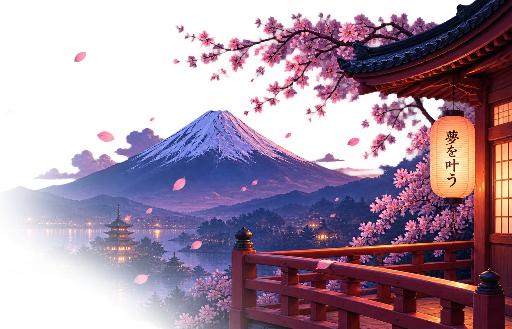
はじめましょう
Answer six short questions and we’ll tell you which of the four stages to start from — and exactly what your first month looks like.
Find your starting point today.
YUME GA KANAU™ is a dedicated online language platform built to make authentic Japanese education accessible, engaging, and deeply impactful — specializing in interactive small-batch learning for JLPT prep (N5 to N2) and conversation, alongside flexible, optional 1-on-1 coaching.
夢が叶う literally translates to “dreams come true.” The name holds a double meaning: building an independent institution was a dream realised for its founder — and it is a standing commitment to every learner who joins.
For our students, choosing YUME GA KANAU™ means their dream of mastering the Japanese language — and connecting with its culture — will truly come to life.
To be a premier global destination for Japanese language education — where students don’t just learn Japanese to pass an exam, but gain the fluency, cultural understanding and confidence to connect naturally with the language and realise their personal and professional dreams.
To empower every student with strong linguistic fundamentals, personalised guidance and proven exam strategies — nurturing confident speakers who express themselves naturally, in an encouraging, zero-pressure environment where no question goes unanswered.
Learners mentored across India, the UK, the USA and Japan.
A strong track record of helping learners clear N5 through N2 on solid foundations.
Interactive small batches and optional 1-on-1 coaching with dedicated doubt-solving for every student.
Three to four years of hands-on experience in online Japanese instruction.
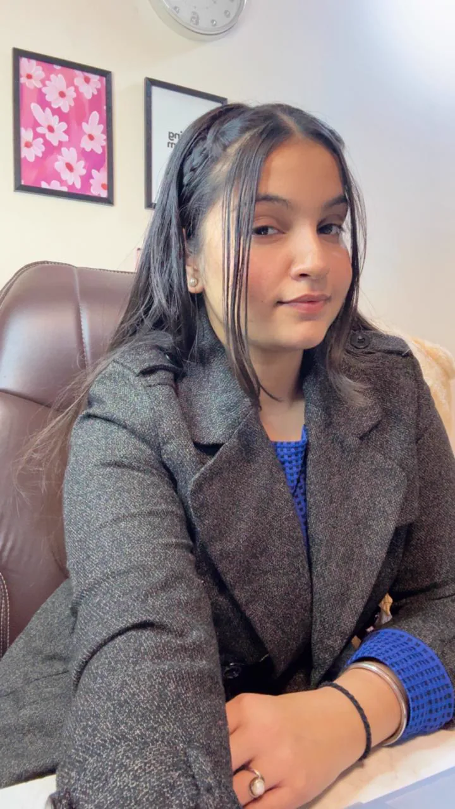
As an advanced Japanese learner and experienced educator, Parveen Sensei knows firsthand what it feels like to navigate kanji, grammar patterns and real-world conversation. Over the past three to four years she has guided students across India — Delhi, Kolkata, Tamil Nadu — as well as international learners from the UK, the USA and Japan.
Her journey as a continuous learner keeps her teaching practical, empathetic, and deeply aligned with what students actually need to succeed.
“Konnichiwa! Welcome to YUME GA KANAU™. Learning a new language is one of the most rewarding journeys you will ever take, but I know it can sometimes feel overwhelming — especially when facing complex kanji or tricky grammar. My goal is to make Japanese feel approachable, logical and enjoyable for you.
Whether you are starting from zero with JLPT N5 or pushing your boundaries toward advanced fluency, you don’t have to walk this path alone. In our classes, every mistake is a step forward, every question is welcomed, and every milestone is celebrated. Let’s make your dream of mastering Japanese come true together!”
Three ways to learn, four stages to climb. If you already know some Japanese, skip ahead to the stage test below — it takes about a minute.
Three routes through the same four stages. Pick the one that matches why you are learning — or combine them.
Level-wise syllabus coverage, mock tests, reading-speed drills and listening practice with a clear week-by-week plan up to exam day.
Everyday situations, natural phrasing, pitch and politeness levels — built for travel, work and talking with real people.
An optional, highly personalized 1-on-1 path designed around your specific pace, goals, and weak spots. Flexible scheduling across time zones and dedicated doubt-solving every session.
Four levels. One continuous journey toward confident Japanese.
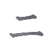
02N4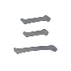
03N3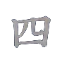
04N2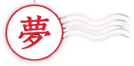
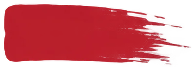
Hiragana, Katakana, ~100 Kanji and the phrases that carry a real self-introduction.
て-form, plain form and conditionals — the stage where isolated phrases finally join into conversation.
The bridge level where most self-learners stall. We work on volume — reading longer texts, following natural speech, and expressing opinions with reasons rather than single words.
Advanced register, abstract topics and the precision employers look for. Exam work becomes strategy: time control, elimination, and reading for structure instead of every word.
Six honest questions. No score, no judgement — just the right starting point so you neither repeat what you know nor drown in what you don’t.
{{ resultBlurb }}
This is a guide, not a verdict. Sensei confirms your level in a short trial session before your plan is finalised.
Tell us where you are on your Japanese journey and what you want from it. Sensei replies personally, usually within one working day.
No spam, no automated funnels. Your details go straight to Parveen Sensei.
Sensei will reply personally, usually within one working day, with available trial slots for your timezone.
Students currently join from India, the UK, the USA and Japan — timings are arranged around your day, not ours.
Take the one-minute stage test first — then mention your result in the form.